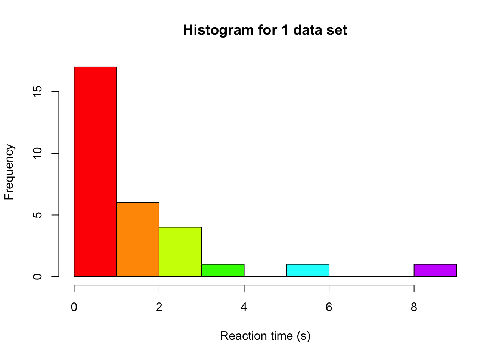
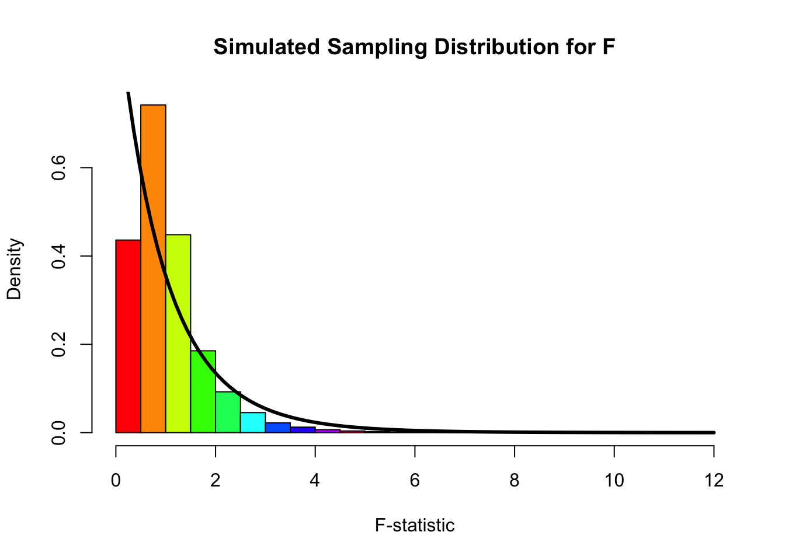

We can investigate the effect of non-normality on our inference by running a small simulation study where we simulate 100,000 data sets under the null hypothesis. We can then check what the sampling distribution looks like: if it deviates from what we usually assume when conducting an ANOVA, we are at risk of increased or decreased type-1 errors. Let’s start by simulating a single data set, with 3 groups. We can imagine we simulate reaction times, because this variable is often not normally distributed (due to time always being positive, and most people responding as close to 0 as possible).
set.seed(124) # for reproducabilitynGroups <-3# number of groupsgroupN <-10# sample size per groupgroupVar <-factor(rep(letters[1:3], each = groupN)) # create a variable with a,b,c to indicate group membershipdv <-abs(rt(nGroups*groupN, df =1)) # we use a t distribution with 2 df# we draw from the same distribution for all groups, because we operate under H0# and are therefore not using different means for the groupshist(dv, col =rainbow(10), xlab ="Reaction time (s)", main ="Histogram for 1 data set")

Note that the distribution we used to simulate, is the Cauchy distribution, which is a distribution that produces extreme values fairly often. Especially in cases of ANOVA, more extreme values can have a big impact on our inference. So while the ANOVA is relatively robust to violations of normality, it is pretty vulnerable to extreme observations because of their impact on the variance. These can still be detected by the usual normality assumption checks (Q-Q plot, Shapiro), or by other means, such as boxplots (see the tutorial assignment for an example).
Based on our 1 data set, we can fit the ANOVA model and compute the F-statistic:
# Produce ANOVA table:myTable <-summary(aov(dv ~ groupVar)) myTable
Df Sum Sq Mean Sq F value Pr(>F)
groupVar 2 14.11 7.056 2.578 0.0945 .
Residuals 27 73.91 2.738
---
Signif. codes: 0 '***' 0.001 '**' 0.01 '*' 0.05 '.' 0.1 ' ' 1
# extract df values:dfModel <- myTable[[1]][1, 'Df']dfError <- myTable[[1]][2, 'Df']# compare F-value to critical F of the assumed distribution to see if we reject# we set alpha to 0.05fVal >qf(0.95, dfModel, dfError)
[1] FALSE
Simulating many data sets
In order to get 100,000 F-values, we repeat the above steps 100,000 times, each time saving the F-statistic. This enables us to afterwards make a histogram of those 100,000 F-values and see how well the theoretical distribution fits
fValues <- rejectedNull <-numeric(1e5) # allocate an object to save the F values to, and our decisions# We use a fancy programming trick to repeat some code many times over# allowing us to easily repeat the drawing of 100,000 data setsfor (i in1:length(fValues)) {# same data simulation steps as above groupVar <-factor(rep(letters[1:3], each = groupN)) dv <-abs(rt(nGroups*groupN, df =1))# Produce ANOVA table: myTable <-summary(aov(dv ~ groupVar)) #extract F-value: and store in our object with all F-values fValues[i] <- myTable[[1]][1, 'F value'] rejectedNull[i] <- fValues[i] >qf(0.95, dfModel, dfError)}hist(fValues, col =rainbow(10), xlab ="F-statistic", main ="Simulated Sampling Distribution for F", freq =FALSE, breaks =25)curve(df(x, dfModel, dfError), from =0, to =12, add =TRUE, lwd =3, col ="black")

Based on the shape of the histogram and the overlaid theoretical F-distribution (the one we assume that the F-statistic follows when we attach a p-value to our observed F-statistic), we can see that there is not a perfect match: the histogram is a bit more located around 1, whereas the theoretical distribution has most of its mass close to 0. In addition to such a plot, we can also look at how many times we made a type-I error. We simulated under the null distribution (no group differences), so every time we rejected the null hypothesis based on the data, we made a type-I error. We used an alpha of 0.05, so if our assumption would hold we expect to have made this error in about 5% of the cases. However, when we look at the number of times we rejected the null hypothesis and express it as an proportion of the total, we see:
sum(rejectedNull) /length(rejectedNull)
[1] 0.01662
That our rejection rate is actually a lot lower than 5%! This might seem like good news (fewer errors), but it means that the sampling distribution we assume is not accurate. We likely have a lot less power than we originally thought we had based on an alpha of 0.05. So while it might seem like a good thing here (fewer type-I errors), overall it’s a bad thing, because the NHST framework is completely focused on having good control over type-I and type-II error rates.